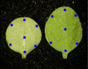

This package provides a simple description of tissue expansion using a global field. To simplify its definition, this field is not a speed field (meaning, the definition of speed in each point of space). Rather, points are given a specific coordinate in space and the user defines how space change throughout time. That kind of definition match what happen when some cells are marked and their positions are followed throughout time on an expanding tissue. When ink's dots are deposited on a growing leaf for example. To follow their trajectories give a reasonable clue on the underlying expansion field of the leaf. Here, dots do not move relatively to the tissue, it's rather the tissue (the space) that expand throughout time.
The field is defined graphically as a sequence of 2D patch (surface). Each patch represent the geometry of the underlying space (e.g. a leaf) at one time. In this tutorial, 2D nurbs are used to interpolate a set of lines into a regular patch. Hence, each point of the space inside the patch is represented by a couple of coordinates (u,v). The sequence of patches is itself interpolated throughout time. The expansion field, then, is a 3D nurbs volume. Each point of the leaf is represented by three coordinates (u,v,t), two coordinates of space and one coordinate of time.
The tissue is drawn directly on the first patch of the above field. A set of dots represent the vertices of the tissue and connectors between these dots stand for the walls of the cells. As for the tissue drawing, information about points and connector are directly read in the svg file to construct a mesh structure that will correspond to the geometry of the tissue.
The position of the points of the mesh defined above are defined in the cartesian coordinate system of the svg file. However, we need to express them in the (u,v) coordinates at time 0 of the field defined above. At time 0, the field is a 2DNurbsPatch. This object do not define any method that transform a cartesian coordinate into the local (u,v) one. Still, the opposite method exists. We can ask for the cartesian position of any (u,v) coordinates. To inverse this function we use a opitmization function from the scipy package
We must first define an error function. Here, we use the cartesian distance between the guessed point (v) and the real one (vec) Then we can use fmin to find the (u,v) coordinates that approach best the given point where (0.,0.) is a first estimate of the (u,v) coordinates. Since the function can really fall into local minima, a good practice consists in walking roughly through the space to find a first approximation of the coordinates. and use this guess in place of the crude (0.,0.) used above.
Once the (u,v) coordinates of each point si known, the expansion of the tissue follow directly the modification of space. (u,v) coordinates of points stay constant throughout time. We just need to recompute the cartesian position of point from the (u,v) coordinates and the nurbs patch that describe the space at a given time.
All above operations have been written in simu.py, the main simulation file. However, first, you must launch create_field.py to generate the expansion field from the svg draw. The script will produce an expansion_field.txt file that contains a pickled representation of the volumetric nurbs.
Then you must launch create_tissue.py to read the svg file once again and produce the tissue.zip file that contains a representation of the tissue with a mesh.
Last launch simu.py to display the expansion of the tissue throughout time.
{kind=link}